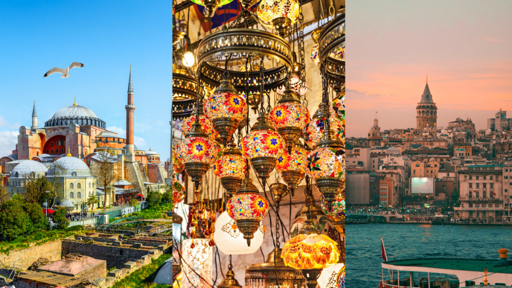
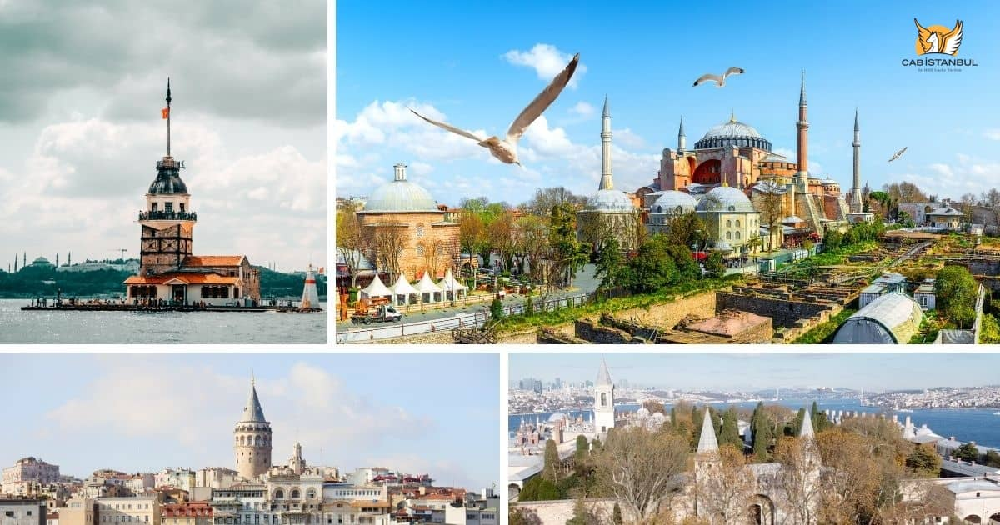
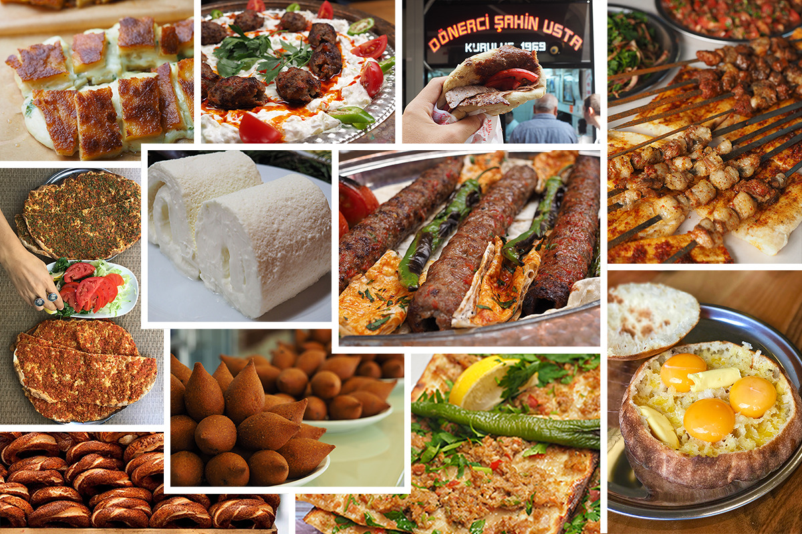

Första Blogginlägget
Dec.2024

Det bysantinska riket: Staden var hjärtat av det östromerska riket och ett centrum för kristendomen.
Hagia Sofia, en gång en kyrka, står som ett imponerande monument över denna tid.
Det osmanska riket: Efter erövringen 1453 blev staden ett muslimskt centrum med ikoniska byggnader
som
Blå moskén och Topkapipalatset.
Den moderna turkiska republiken: Även om Ankara är huvudstaden, är Istanbul fortfarande Turkiets
kulturella och ekonomiska hjärta.
Andra Blogginlägget
Dec.2024

En arkitektonisk pärla som speglar stadens historia som både kyrka, moské och nu museum. Hagia Sofia
symboliserar harmonin mellan kristendom och islam.
Blå moskén (Sultan Ahmed-moskén)
Känd för sina vackra blå kakelplattor, är denna moské ett av de mest kända landmärkena i staden.
Topkapipalatset
En gång osmanska sultanernas residens, nu ett museum där du kan utforska rikets historia och
skatter.
Grand Bazaar
En av världens största och äldsta marknader med över 4 000 butiker. Här kan du köpa allt från
smycken
till kryddor.
Bosporen
Sundet som skiljer Europa från Asien erbjuder fantastiska kryssningar med vyer över stadens
silhuett.
Tredje Blogginlägget
Dec.2024

Istanbul är ett paradis för matälskare, med ett kök som speglar stadens kulturella mångfald.
Meze: Smårätter som delas med vänner, ofta åtföljda av raki, Turkiets anissprit.
Kebab: Från iskenderkebab till doner – stadens kebaber är legendariska.
Baklava: Söta bakverk fyllda med nötter och sirap.
Turkiskt kaffe: En ritual lika mycket som en dryck – starkt, aromatiskt och bäst avnjutet långsamt.
.